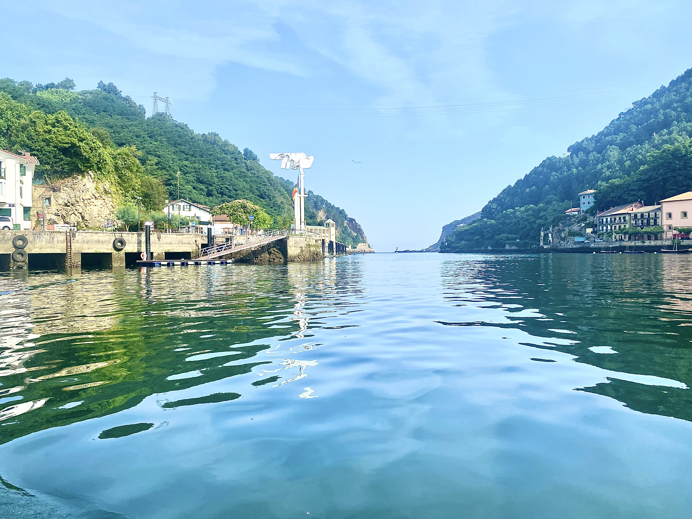
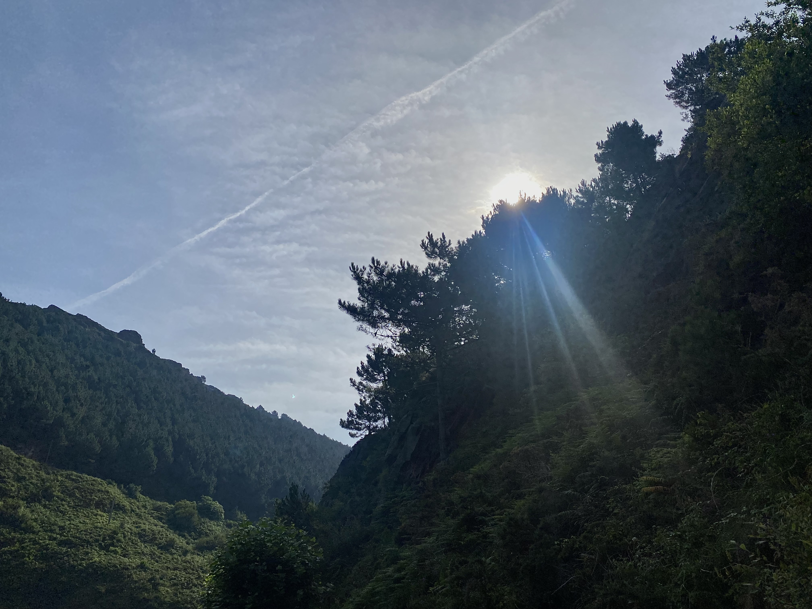

NATURE, ARCHITECTURAL, AND AVIATION PHOTOGRAPHY
SURYA SANJAY
ALBUMS · SPAIN | MAIN WEBSITE
Spain
During the summer of 2022, I participated in a psychology-focused study abroad program based in Madrid, Spain. We frequently took trips outside the city to explore the rest of the country, and the shots displayed below are a product of my awe for the scenery and the architectural fusion that the country has to offer. Due to my lack of access to a “real camera,” I had no choice but to use my iPhone 11’s less-than-optimal lens. Nevertheless, I still believe they encapsulate my memories of the places I visited very well.
Part One: Castilla
Southeastward lookout from Toledo, Spain. 06/25/2022.

Roman aqueduct in Segovia, Spain. 07/01/2022.

East-facing view of Seville, Spain from inside the Cathedral of Saint Mary of the See. 07/02/2022.

The Plaza de España in Seville, Spain. 07/03/2022.

Part Two: Vasconia
The inlet between Pasai San Pedro and Pasai San Juan (Donibane), Spain. 07/15/2022.

The foot of the Jaizkibel Range near Pasai San Juan (Donibane), Spain. 07/15/2022.

© 2022, Surya Sanjay